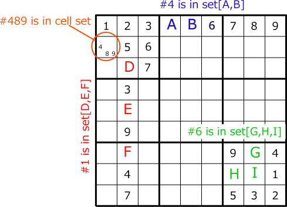
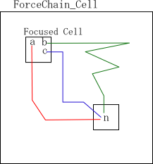
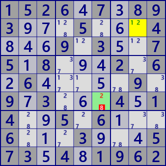
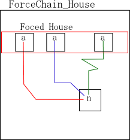
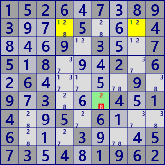
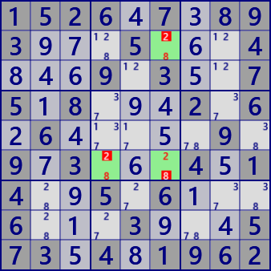

The force algorithm is a logical solution.
It's not an absurd algorithm.
All of the Force-based algorithms use the current (extended)link.
The chain is assembled using this links, and the truth or false of the cell candidate is logically derived.
The Force algorithm is based on the following logic.
- Set X has one element true and the rest false. Which is true is undecided.
- In a chain starting with true element, the value of the derived element is determined to be true or false.
- In a chain starting with false element, the value of the derived element is uncertain (it can be true or false).
- For each chain that starts assuming each element of set Ⅹ as true, the authenticity of element A is determined when the true/false values of element A leading by all chains match.
- In the chain that starts assuming that one element B of set X is true, when the true/false values of the element C guided by multiple routes do not match, the starting element B is determined to be false.

The (extended) link and chain structure of the Force method is relatively simple.
It is also an efficient analysis method. That is, a good analytical algorithm.
Sudoku is a logical puzzle
ForceChain
ForceChain is an analysis algorithm that uses super link.
The algorithm uses a spillover search rather than a chain search that repeats trials such as NiceLoop.
This site uses HoDoKu as a reference.
There, ForceChain is on "Last Resort" page.
It is certain that ForceChain is an extremely powerful analysis algorithm.
However, i do not know if there is a problem that can only be solved with ForceChain.
SuperLinkMan/Eval_SuperLinkChainEx used in this algorithm is a powerful routine.
With specify the origin cell/digit, and type Strong/Weak of the first link,
all links are found.
There is C # source code in the project.
(1)ForceChain_Cell
Focused one uncertain cell A. Even if any of the candidate digits of cell A is assumed to be true,
when the digit#n of cell B to be linked becomes true, In B cell #n is determined to be true.

When following the link assuming that the candidate digit#a is true, some digit in the cell may lead to both true and false. This is the case of (3)ForceChain_Contradiction below, the first proposition "#a is true" is an error, Therefore, there is no link starting with "#a is true". In the GNPX implementation, this case is not included in the solution of ForceChain_Cell, but is solved by ForceChain_Contradiction.
An example of ForceChain_Cell. Cell r2c4 becomes #1 even if the digit in cell r4c4 is #3 or #7.
The link string at this time is shown.

1526.7.893...5...4...9.3..75.8...2.6.6.....9.9.3...4.14..5.6...6...3...573.4.1962
ForceChain_Cell r6c6/2 is true
[W r2c8/+1 -> r2c4/-1] => [S r2c4/-1 -> r3c5/+1] => [W r3c5/+1 -> r5c5/-1] => [W r5c5/+7 -> r5c7/-7]
=> [S r5c7/-7 -> r8c7/+7] => [W r8c7/+7 -> r8c4/-7] => [W r8c4/+2 -> r6c4/-2]
=> [S r6c4/-2 -> r6c6/+2]
[W r2c8/+2 -> r2c6/-2] => [S r2c6/-2 -> r6c6/+2]
ForceChain_Cell determines multiple cells and digits at the same time.

1526.7.893...5...4...9.3..75.8...2.6.6.....9.9.3...4.14..5.6...6...3...573.4.1962
ForceChain_Cell r6c6/2 is true
[W r2c8/+1 -> r2c4/-1] => [S r2c4/-1 -> r3c5/+1] => [W r3c5/+1 -> r5c5/-1] => [W r5c5/+7 -> r5c7/-7]
=> [S r5c7/-7 -> r8c7/+7] => [W r8c7/+7 -> r8c4/-7] => [W r8c4/+2 -> r6c4/-2]
=> [S r6c4/-2 -> r6c6/+2]
[W r2c8/+2 -> r2c6/-2] => [S r2c6/-2 -> r6c6/+2]
ForceChain_Cell r2c6/8 is true
[W r2c8/+1 -> r2c4/-1] => [S (ALS:r2468c4) r2c4/-1 -> r4c4/+3] => [W r4c4/+3 -> r4c8/-3]
=> [S r4c8/-3 -> r7c8/+3] => [S r7c8/-7 -> r7c5/+7] => [S r7c5/-2 -> r3c5/+2]
=> [W r3c5/+2 -> r2c6/-2] => [S r2c6/-2 -> r2c6/+8]
[W r2c8/+2 -> r3c8/-2] => [S r3c8/-2 -> r3c5/+2] => [W r3c5/+2 -> r2c6/-2] => [S r2c6/-2 -> r2c6/+8]
ForceChain_Cell r6c4/8 is true
[W r2c8/+1 -> r2c4/-1] => [S r2c4/-1 -> r3c5/+1] => [W r3c5/+1 -> r5c5/-1] => [W r5c5/+7 -> r5c7/-7]
=> [S r5c7/-7 -> r8c7/+7] => [W r8c7/+7 -> r8c4/-7] => [W r8c4/+2 -> r6c4/-2]
=> [S r6c4/-2 -> r6c4/+8]
[W r2c8/+2 -> r2c6/-2] => [S r2c6/-2 -> r6c6/+2] => [S r6c6/-8 -> r6c4/+8]
(2)ForceChain_House
In one House, focused cells having a candidate digit #a.
Whichever cell #a is assumed to be true,
when the digit #n of the linked cell B becomes true, the B cell is determined to be #n true.

In ForceChain_House as well as ForceChain_Cell, when following the link assuming that the candidate digit#a is true, some digit in the cell may lead to both true and false. This is the case of (3)ForceChain_Contradiction below, the first proposition "#a is true" is an error, Therefore, there is no link starting with "#a is true". In the GNPX implementation, this case is not included in the solution of ForceChain_House, but is solved by ForceChain_Contradiction.
An example of ForceChain_House.
Whichever cell (r2c468) with candidate digit #2 in row 2 is assumed to be true, r7c2 is confirmed as #2.
Here is the link string. Although the digit focused on matches here, this is not a condition.

1526.7.893...5...4...9.3..75.8...2.6.6.....9.9.3...4.14..5.6...6...3...573.4.1962
ForceChain_House(row2/#1) r6c6/#2 is true
[W r2c4/+1 -> r2c4/-8] => [S r2c4/-8 -> r2c6/+8] => [S r2c6/-2 -> r6c6/+2]
[W r2c8/+1 -> r2c4/-1] => [S r2c4/-1 -> r3c5/+1] => [W r3c5/+1 -> r5c5/-1] => [W r5c5/+7 -> r5c7/-7]
=> [S r5c7/-7 -> r8c7/+7] => [W r8c7/+7 -> r8c4/-7] => [W r8c4/+2 -> r6c4/-2]
=> [S r6c4/-2 -> r6c6/+2]
ForceChain_House fixes multiple cells/digits at the same time.

1526.7.893...5...4...9.3..75.8...2.6.6.....9.9.3...4.14..5.6...6...3...573.4.1962
ForceChain_House(row2/#1) r6c6/#2 is true
[W r2c4/+1 -> r2c4/-8] => [S r2c4/-8 -> r2c6/+8] => [S r2c6/-2 -> r6c6/+2]
[W r2c8/+1 -> r2c4/-1] => [S r2c4/-1 -> r3c5/+1] => [W r3c5/+1 -> r5c5/-1]
=> [W r5c5/+7 -> r5c7/-7] => [S r5c7/-7 -> r8c7/+7] => [W r8c7/+7 -> r8c4/-7]
=> [W r8c4/+2 -> r6c4/-2] => [S r6c4/-2 -> r6c6/+2]
ForceChain_House(row2/#1) r2c6/#8 is true
[W r2c4/+1 -> r2c8/-1] => [W r2c8/+2 -> r2c6/-2] => [S r2c6/-2 -> r2c6/+8]
[W r2c8/+1 -> r2c4/-1] => [S (ALS:r2468c4) r2c4/-1 -> r4c4/+3] => [W r4c4/+3 -> r4c8/-3]
=> [S r4c8/-3 -> r7c8/+3] => [S r7c8/-7 -> r7c5/+7] => [S r7c5/-2 -> r3c5/+2]
=> [W r3c5/+2 -> r2c6/-2] => [S r2c6/-2 -> r2c6/+8]
ForceChain_House(row2/#1) r6c4/#8 is true
[W r2c4/+1 -> r5c4/-1] => [S (ALS:r458c4) r5c4/-1 -> r8c4/+2] => [W r8c4/+2 -> r6c4/-2]
=> [S r6c4/-2 -> r6c4/+8]
[W r2c8/+1 -> r2c4/-1] => [S r2c4/-1 -> r3c5/+1] => [W r3c5/+1 -> r5c5/-1] => [W r5c5/+7 -> r5c7/-7]
=> [S r5c7/-7 -> r8c7/+7] => [W r8c7/+7 -> r8c4/-7] => [W r8c4/+2 -> r6c4/-2]
=> [S r6c4/-2 -> r6c4/+8]
(3)ForceChain_Contradiction
Assuming that a cell/digit is true, it may be possible for both the true and false to lead the digit(#n) of other cell in the superlink concatenation.
This is a contradiction, the first assumption is incorrect.

1526.7.893...5...4...9.3..75.8...2.6.6.....9.9.3...4.14..5.6...6...3...573.4.1962
ForceChain_Contradiction r2c4/#2 is false
[W r2c4/+2 -> r2c8/-2] => [S (ALS:r247c8) r2c8/-2 -> r2c8/+1]
[W r2c4/+2 -> r8c4/-2] => [W r8c4/+7 -> r8c7/-7] => [S r8c7/-7 -> r5c7/+7] => [W r5c7/+7 -> r5c5/-7]
=> [W r5c5/+1 -> r3c5/-1] => [S r3c5/-1 -> r3c8/+1] => [W r3c8/+1 -> r2c8/-1]
ForceChain_Contradiction r2c4/#8 is false
[W r2c4/+8 -> r2c6/-8] => [W r2c6/+2 -> r2c8/-2] => [S r2c8/-2 -> r2c8/+1]
[W r2c4/+8 -> r6c4/-8] => [W r6c4/+2 -> r8c4/-2] => [W r8c4/+7 -> r8c7/-7] => [S r8c7/-7 -> r5c7/+7]
=> [W r5c7/+7 -> r5c5/-7] => [W r5c5/+1 -> r3c5/-1] => [S r3c5/-1 -> r3c8/+1]
=> [W r3c8/+1 -> r2c8/-1]
ForceChain_Contradiction r2c6/#2 is false
[W r2c6/+2 -> r3c5/-2] => [W r3c5/+1 -> r5c5/-1] => [W r5c5/+7 -> r5c7/-7] => [S r5c7/-7 -> r8c7/+7]
=> [W r8c7/+7 -> r8c4/-7] => [S (ALS:r268c4) r8c4/-7 -> r2c4/+1]
[W r2c6/+2 -> r2c8/-2] => [S r2c8/-2 -> r3c8/+2] => [S r3c8/-1 -> r3c5/+1] => [W r3c5/+1 -> r2c4/-1]
ForceChain_Contradiction r2c8/#1 is false
[W r2c8/+1 -> r2c4/-1] => [S r2c4/-1 -> r3c5/+1]
[W r2c8/+1 -> r2c4/-1] => [S (ALS:r268c4) r2c4/-1 -> r8c4/+7] => [W r8c4/+7 -> r8c7/-7] => [S r8c7/-7 -> r5c7/+7]
=> [W r5c7/+7 -> r5c5/-7] => [W r5c5/+1 -> r3c5/-1]
ForceChain_Contradiction r3c5/#1 is false
[W r3c5/+1 -> r5c5/-1] => [W r5c5/+7 -> r5c7/-7] => [S r5c7/-7 -> r8c7/+7] => [W r8c7/+7 -> r8c4/-7]
=> [S (ALS:r268c4) r8c4/-7 -> r2c4/+1]
[W r3c5/+1 -> r2c4/-1]
ForceChain_Contradiction r3c8/#2 is false
[W r3c8/+2 -> r3c5/-2] => [W r3c5/+1 -> r5c5/-1] => [W r5c5/+7 -> r5c7/-7] => [S r5c7/-7 -> r8c7/+7]
=> [W r8c7/+7 -> r8c4/-7] => [S (ALS:r268c4) r8c4/-7 -> r2c4/+1]
[W r3c8/+2 -> r2c8/-2] => [S (ALS:r247c8) r2c8/-2 -> r2c8/+1] => [W r2c8/+1 -> r2c4/-1]
ForceChain_Contradiction r4c4/#7 is false
[W r4c4/+7 -> r8c4/-7] => [S (ALS:r268c4) r8c4/-7 -> r2c4/+1]
[W r4c4/+7 -> r4c8/-7] => [S r4c8/-7 -> r7c8/+7] => [W r7c8/+7 -> r7c5/-7] => [W r7c5/+2 -> r3c5/-2]
=> [S r3c5/-2 -> r3c8/+2] => [S r3c8/-1 -> r2c8/+1] => [W r2c8/+1 -> r2c4/-1]
ForceChain_Contradiction r4c8/#3 is false
[W r4c8/+3 -> r4c4/-3] => [S (ALS:r2468c4) r4c4/-3 -> r2c4/+1]
[W r4c8/+3 -> r7c8/-3] => [W r7c8/+7 -> r7c5/-7] => [W r7c5/+2 -> r3c5/-2] => [S r3c5/-2 -> r3c8/+2]
=> [S r3c8/-1 -> r2c8/+1] => [W r2c8/+1 -> r2c4/-1]
ForceChain_Contradiction r5c4/#1 is false
[W r5c4/+1 -> r5c5/-1] => [W r5c5/+7 -> r5c7/-7] => [S r5c7/-7 -> r8c7/+7] => [W r8c7/+7 -> r8c4/-7]
=> [S (ALS:r268c4) r8c4/-7 -> r2c4/+1]
[W r5c4/+1 -> r2c4/-1]
ForceChain_Contradiction r5c4/#3 is false
[W r5c4/+3 -> r4c4/-3] => [S (ALS:r2468c4) r4c4/-3 -> r2c4/+1]
[W r5c4/+3 -> r4c4/-3] => [S r4c4/-3 -> r4c8/+3] => [S r4c8/-7 -> r7c8/+7] => [W r7c8/+7 -> r7c5/-7]
=> [W r7c5/+2 -> r3c5/-2] => [S r3c5/-2 -> r3c8/+2] => [S r3c8/-1 -> r2c8/+1]
=> [W r2c8/+1 -> r2c4/-1]
ForceChain_Contradiction r5c5/#7 is false
[W r5c5/+7 -> r5c7/-7] => [S r5c7/-7 -> r8c7/+7] => [W r8c7/+7 -> r8c4/-7] => [S (ALS:r268c4) r8c4/-7 -> r2c4/+1]
[W r5c5/+7 -> r7c5/-7] => [W r7c5/+2 -> r3c5/-2] => [S r3c5/-2 -> r3c8/+2] => [S r3c8/-1 -> r2c8/+1]
=> [W r2c8/+1 -> r2c4/-1]
ForceChain_Contradiction r5c7/#7 is false
[W r5c7/+7 -> r5c5/-7] => [W r5c5/+1 -> r3c5/-1] => [S r3c5/-1 -> r2c4/+1]
[W r5c7/+7 -> r4c8/-7] => [S r4c8/-7 -> r7c8/+7] => [W r7c8/+7 -> r7c5/-7] => [W r7c5/+2 -> r3c5/-2]
=> [S r3c5/-2 -> r3c8/+2] => [S r3c8/-1 -> r2c8/+1] => [W r2c8/+1 -> r2c4/-1]
ForceChain_Contradiction r5c9/#8 is false
[W r5c9/+8 -> r5c7/-8] => [W r5c7/+7 -> r5c5/-7] => [W r5c5/+1 -> r3c5/-1] => [S r3c5/-1 -> r2c4/+1]
[W r5c9/+8 -> r5c7/-8] => [S r5c7/-8 -> r8c7/+8] => [W r8c7/+8 -> r7c9/-8] => [S (ALS:r7c589) r7c9/-8 -> r7c5/+2]
=> [W r7c5/+2 -> r3c5/-2] => [S r3c5/-2 -> r3c8/+2] => [S r3c8/-1 -> r2c8/+1]
=> [W r2c8/+1 -> r2c4/-1]
ForceChain_Contradiction r6c4/#2 is false
[W r6c4/+2 -> r8c4/-2] => [W r8c4/+7 -> r8c7/-7] => [S r8c7/-7 -> r5c7/+7] => [S r5c7/-8 -> r5c9/+8]
=> [S r5c9/-3 -> r5c4/+3] => [S r5c4/-1 -> r2c4/+1]
[W r6c4/+2 -> r6c6/-2] => [S r6c6/-2 -> r2c6/+2] => [W r2c6/+2 -> r3c5/-2] => [W r3c5/+1 -> r2c4/-1]
ForceChain_Contradiction r6c6/#8 is false
[W r6c6/+8 -> r2c6/-8] => [W r2c6/+2 -> r3c5/-2] => [W r3c5/+1 -> r5c5/-1] => [W r5c5/+7 -> r5c7/-7]
=> [S r5c7/-7 -> r8c7/+7] => [W r8c7/+7 -> r8c4/-7] => [S (ALS:r268c4) r8c4/-7 -> r2c4/+1]
[W r6c6/+8 -> r6c4/-8] => [S (ALS:r4568c4) r6c4/-8 -> r5c4/+1] => [W r5c4/+1 -> r2c4/-1]
ForceChain_Contradiction r7c2/#8 is false
[W r7c2/+8 -> r7c9/-8] => [S r7c9/-8 -> r5c9/+8] => [S r5c9/-3 -> r5c4/+3] => [S r5c4/-1 -> r2c4/+1]
[W r7c2/+8 -> r7c9/-8] => [S (ALS:r7c589) r7c9/-8 -> r7c5/+2] => [W r7c5/+2 -> r3c5/-2] => [S r3c5/-2 -> r3c8/+2]
=> [S r3c8/-1 -> r2c8/+1] => [W r2c8/+1 -> r2c4/-1]
ForceChain_Contradiction r7c5/#2 is false
[W r7c5/+2 -> r7c2/-2] => [W r7c2/+8 -> r7c9/-8] => [S r7c9/-8 -> r5c9/+8] => [S r5c9/-3 -> r5c4/+3]
=> [S r5c4/-1 -> r2c4/+1]
[W r7c5/+2 -> r3c5/-2] => [S r3c5/-2 -> r3c8/+2] => [S r3c8/-1 -> r2c8/+1] => [W r2c8/+1 -> r2c4/-1]
ForceChain_Contradiction r7c8/#7 is false
[W r7c8/+7 -> r4c8/-7] => [S r4c8/-7 -> r4c4/+7] => [S r4c4/-3 -> r5c4/+3] => [S r5c4/-1 -> r2c4/+1]
[W r7c8/+7 -> r7c5/-7] => [W r7c5/+2 -> r3c5/-2] => [S r3c5/-2 -> r3c8/+2] => [S r3c8/-1 -> r2c8/+1]
=> [W r2c8/+1 -> r2c4/-1]
ForceChain_Contradiction r7c9/#3 is false
[W r7c9/+3 -> r5c9/-3] => [S r5c9/-3 -> r5c4/+3] => [S r5c4/-1 -> r2c4/+1]
[W r7c9/+3 -> r7c8/-3] => [W r7c8/+7 -> r7c5/-7] => [W r7c5/+2 -> r3c5/-2] => [S r3c5/-2 -> r3c8/+2]
=> [S r3c8/-1 -> r2c8/+1] => [W r2c8/+1 -> r2c4/-1]
ForceChain_Contradiction r8c2/#2 is false
[W r8c2/+2 -> r7c2/-2] => [W r7c2/+8 -> r7c9/-8] => [S r7c9/-8 -> r5c9/+8] => [S r5c9/-3 -> r5c4/+3]
=> [S r5c4/-1 -> r2c4/+1]
[W r8c2/+2 -> r7c2/-2] => [S r7c2/-2 -> r7c5/+2] => [W r7c5/+2 -> r3c5/-2] => [W r3c5/+1 -> r2c4/-1]
ForceChain_Contradiction r8c4/#7 is false
[W r8c4/+7 -> r7c5/-7] => [S (ALS:r7c259) r7c5/-7 -> r7c9/+3] => [W r7c9/+3 -> r5c9/-3] => [S r5c9/-3 -> r5c4/+3]
=> [S r5c4/-1 -> r2c4/+1]
[W r8c4/+7 -> r7c5/-7] => [W r7c5/+2 -> r3c5/-2] => [S r3c5/-2 -> r3c8/+2] => [S r3c8/-1 -> r2c8/+1]
=> [W r2c8/+1 -> r2c4/-1]
ForceChain_Contradiction r8c7/#8 is false
[W r8c7/+8 -> r5c7/-8] => [W r5c7/+7 -> r5c5/-7] => [W r5c5/+1 -> r3c5/-1] => [S r3c5/-1 -> r2c4/+1]
[W r8c7/+8 -> r7c9/-8] => [S (ALS:r7c589) r7c9/-8 -> r7c5/+2] => [W r7c5/+2 -> r3c5/-2] => [S r3c5/-2 -> r3c8/+2]
=> [S r3c8/-1 -> r2c8/+1] => [W r2c8/+1 -> r2c4/-1]